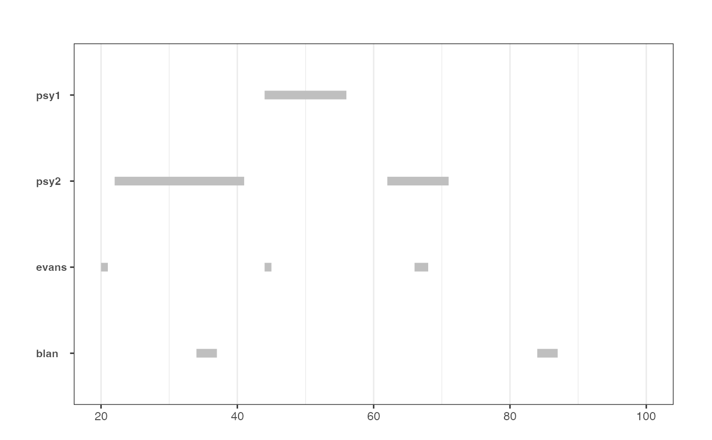

Computes the origination, termination and duration of episodes during which the time series display explosive dynamics.
datestamp(object, cv = NULL, min_duration = 0L, ...)
# S3 method for radf_obj
datestamp(
object,
cv = NULL,
min_duration = 0L,
sig_lvl = 95,
option = c("gsadf", "sadf"),
nonrejected = FALSE,
...
)An object of class obj.
An object of class cv.
The minimum duration of an explosive period for it to be reported (default = 0).
further arguments passed to methods.
logical. Significance level, one of 90, 95 or 99.
Whether to apply the "gsadf" or "sadf" methodology (default = "gsadf").
logical. Whether to apply datestamping technique to the series that were not able to reject the Null hypothesis.
Return a table with the following columns:
Start:
Peak:
End:
Duration:
Signal:
Ongoing:
Returns a list containing the estimated origination and termination dates of episodes of explosive behaviour and the corresponding duration.
Datestamp also stores a vector whose elements take the value of 1 when there is a period of explosive behaviour and 0 otherwise. This output can serve as a dummy variable for the occurrence of exuberance.
Phillips, P. C. B., Shi, S., & Yu, J. (2015). Testing for Multiple Bubbles: Historical Episodes of Exuberance and Collapse in the S&P 500. International Economic Review, 56(4), 1043-1078.
rsim_data <- radf(sim_data)
ds_data <- datestamp(rsim_data)
#> Using `radf_crit` for `cv`.
ds_data
#>
#> ── Datestamp (min_duration = 0) ───────────────────────────────── Monte Carlo ──
#>
#> psy1 :
#> Start Peak End Duration Signal Ongoing
#> 1 44 48 56 12 positive FALSE
#>
#> psy2 :
#> Start Peak End Duration Signal Ongoing
#> 1 22 40 41 19 positive FALSE
#> 2 62 70 71 9 positive FALSE
#>
#> evans :
#> Start Peak End Duration Signal Ongoing
#> 1 20 20 21 1 positive FALSE
#> 2 44 44 45 1 positive FALSE
#> 3 66 67 68 2 positive FALSE
#>
#> blan :
#> Start Peak End Duration Signal Ongoing
#> 1 34 36 37 3 positive FALSE
#> 2 84 86 87 3 positive FALSE
#>
# Choose minimum window
datestamp(rsim_data, min_duration = psy_ds(nrow(sim_data)))
#> Using `radf_crit` for `cv`.
#>
#> ── Datestamp (min_duration = 5) ───────────────────────────────── Monte Carlo ──
#>
#> psy1 :
#> Start Peak End Duration Signal Ongoing
#> 1 44 48 56 12 positive FALSE
#>
#> psy2 :
#> Start Peak End Duration Signal Ongoing
#> 1 22 40 41 19 positive FALSE
#> 2 62 70 71 9 positive FALSE
#>
autoplot(ds_data)
